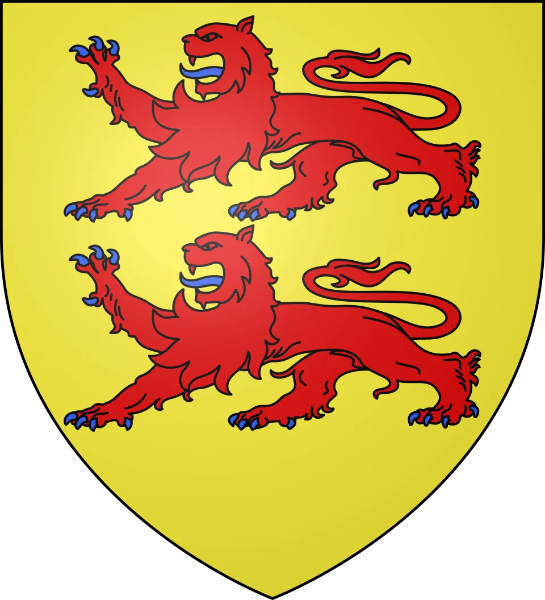

Grottes de
Gargas


⟹ Sites préhistoriques ⟸

Une cavité née du calcaire pyrénéen. Les grottes de Gargas s’ouvrent sur la commune d’Aventignan, dans le massif calcaire du bois de Monteil, au pied des Pyrénées et à quelques kilomètres de Saint-Bertrand-de-Comminges. Le réseau se compose de deux cavités superposées : Gargas I, en contrebas, vaste et basse, et Gargas II, plus haute, étroite et élancée. Elles ont été reliées artificiellement pour faciliter la circulation des visiteurs.
Le repaire des ours des cavernes. Bien avant l’homme, la grotte servit d’abri et de tanière à une faune aujourd’hui disparue. Les fouilles ont livré d’abondants ossements d’ours des cavernes, mais aussi de hyènes, de lions et de nombreux herbivores. Les parois portent encore les griffades laissées par les ours, mêlées aux traces humaines.

Les hommes du Gravettien. Les chasseurs-cueilleurs fréquentent la grotte dès le Paléolithique supérieur. Les principales œuvres pariétales, dont les célèbres mains négatives, sont attribuées au Gravettien, il y a environ 27 000 ans. Cette datation repose notamment sur l’analyse d’un fragment d’os fiché dans une fissure de la paroi, à proximité immédiate d’une main peinte.
Une grotte connue depuis la Renaissance. Gargas n’a jamais été véritablement « perdue ». Dès 1575, l’historien François de Belleforest en donne une première description écrite. Aux XVIIIe et XIXe siècles, elle est visitée par les curieux et les érudits de passage dans le Comminges, qui y laissent parfois leurs graffitis.
Les premières fouilles. À la fin du XIXe siècle, le préhistorien Félix Régnault entreprend des fouilles qui mettent au jour une riche faune quaternaire, notamment des squelettes d’ours des cavernes. En 1895, les participants du congrès de Luchon visitent déjà le site, dont la renommée scientifique grandit.
1906 : la révélation des mains. C’est en 1906 que Félix Régnault repère les premières mains négatives sur les parois. Émile Cartailhac et l’abbé Henri Breuil les étudient et les publient en 1910. La même année, les grottes sont classées Monument historique. Gargas entre alors dans le cercle des grandes grottes ornées européennes.
Une énigme scientifique. Au XXe siècle, les chercheurs se penchent sur la particularité des mains de Gargas : la plupart semblent privées d’un ou plusieurs doigts. Entre 1973 et 1976, Claude Barrière et ses étudiants de l’université de Toulouse réalisent un relevé systématique de toutes les figures. Le débat entre mutilations réelles et doigts repliés volontairement n’est toujours pas tranché.
Protéger pour transmettre. Fragile, la grotte bénéficie depuis le début des années 2000 d’un protocole de visite strict, avec un nombre de visiteurs limité. En 2003, un nouvel aménagement améliore à la fois le confort de visite et la conservation. En 2010 ouvre Nestplori@, centre d’interprétation numérique et préhistorique qui prolonge la découverte sans menacer les parois originales. Des équipes archéologiques poursuivent aujourd’hui encore leurs recherches sur le site.
La seule grotte ornée ouverte au public du département : Gargas est l'unique grotte préhistorique ornée des Hautes-Pyrénées que l'on puisse visiter, ce qui en fait un site majeur de l'art pariétal pyrénéen aux côtés des grottes ariégeoises.
Des doigts qui interrogent depuis un siècle : pour les uns, les doigts manquants témoignent de mutilations dues au gel ou à des rites ; pour d'autres, dont André Leroi-Gourhan, il s'agirait de doigts repliés formant un langage de signes, peut-être lié à la chasse.
Une grotte de brigand : selon la tradition locale, la grotte aurait servi de refuge au XVIIIe siècle à Blaise Ferrage, dit Seyé, redoutable brigand du Comminges exécuté à Toulouse en 1782.
Un voisinage prestigieux : à quelques kilomètres se dressent la cathédrale de Saint-Bertrand-de-Comminges et les vestiges gallo-romains de Lugdunum Convenarum, de quoi composer une journée entière de voyage à travers le temps.
Adresse Grottes préhistoriques de Gargas / Nestplori@, route de Gargas, 65660 Aventignan.
Visites uniquement guidées, en français, anglais et espagnol ; réservation conseillée au 05 62 98 81 50. Visites approfondies (1 h 30) et visites nocturnes à la lampe proposées à certaines dates.
Conseils la température est fraîche toute l'année dans la grotte : prévoir un vêtement chaud et des chaussures fermées. Photographie des parois non autorisée pour leur conservation.
Accès par l'A64, sortie Montréjeau (n° 17), puis la D938 et la D26 en direction de Saint-Bertrand-de-Comminges ; environ 1 h 15 de Toulouse et 45 min de Tarbes.